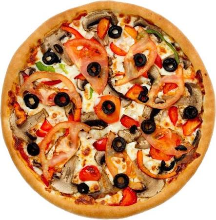

Welcome all to this website
Chinese Cuisine
Chinese Cuisine is an important part of chinese culture, which includes cuisine originating from the diverse regions of China, as well as from Chinese people in other parts of the world. Because of the Chinese diaspora and historical power of the country, Chinese cuisine has influenced many other cuisines from Asia, with modifications made to cater to local palates. Chinese food staples such as rice, soy sauce, noodles, tea, and tofu, and utensils such as chopsticks and the wok, can now be found worldwide.
All @copy rights reserved by Karm Champaneriya
Food
\
Food is any substance consumed to provide nutritional support for any organism. Food is usually of plant, animal or fungal origin, and contains essential nutrients, such as carbohydrate, fats, proteins, vitamins, or minerals.
Pizza
.jpg) Pizza is a savory dish of Italian origin consisting of a usually round, flattened base of leavened wheat-base dough topped with tomatoes, cheese and often various other ingredients (such as achovies, mushrooms, onions, olives, pineapple, meat, etc.), which is then baked at a high temperature, traditionally in a wood-fired oven. [1] A small pizza is sometimes called a pizzetta. A person who makes pizza is known as a pizzaiolo
Pizza is a savory dish of Italian origin consisting of a usually round, flattened base of leavened wheat-base dough topped with tomatoes, cheese and often various other ingredients (such as achovies, mushrooms, onions, olives, pineapple, meat, etc.), which is then baked at a high temperature, traditionally in a wood-fired oven. [1] A small pizza is sometimes called a pizzetta. A person who makes pizza is known as a pizzaiolo

Pizza is a savory
dish of Italian origin consisting of a usually round, flattened base of leavened wheat-base dough topped with
tomatoes, cheese and often various other ingredients (such as achovies, mushrooms, onions, olives, pineapple, meat,
etc.), which is then baked at a high temperature, traditionally in a wood-fired oven. [1] A small pizza is sometimes
called a pizzetta. A person who makes pizza is known as a pizzaiolo